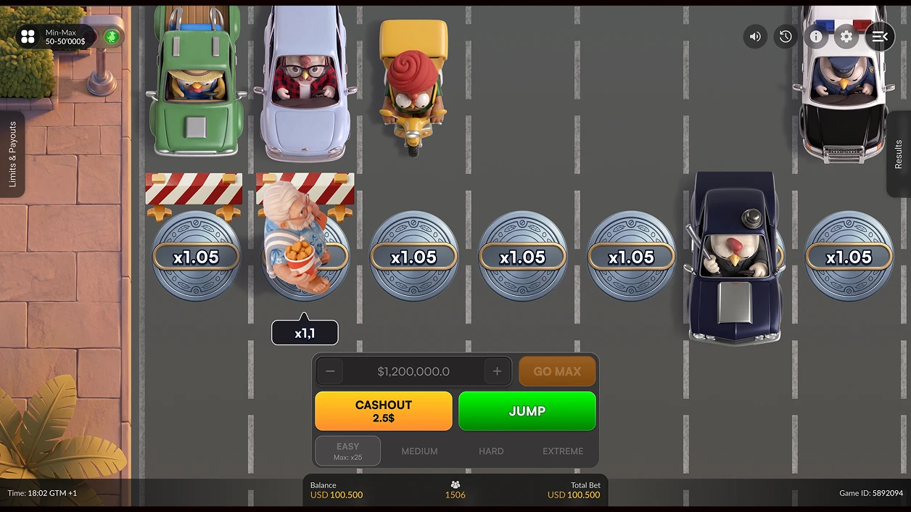
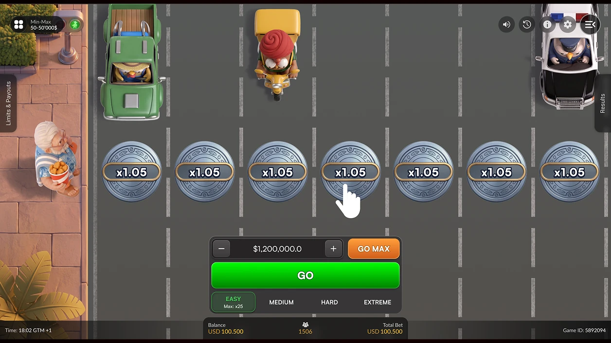
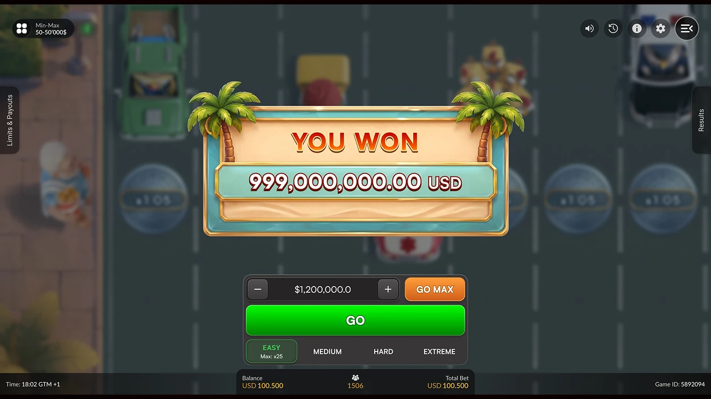

← Selected works02 / 12
Pascal Gaming · Instant
Chicken Revenge

Visual world
Playful, readable action
Expressive character design and a clear sequence of platforms bring a playful visual language to the game.
A team-delivered Pascal Gaming project, presented as part of my game art and production portfolio.

